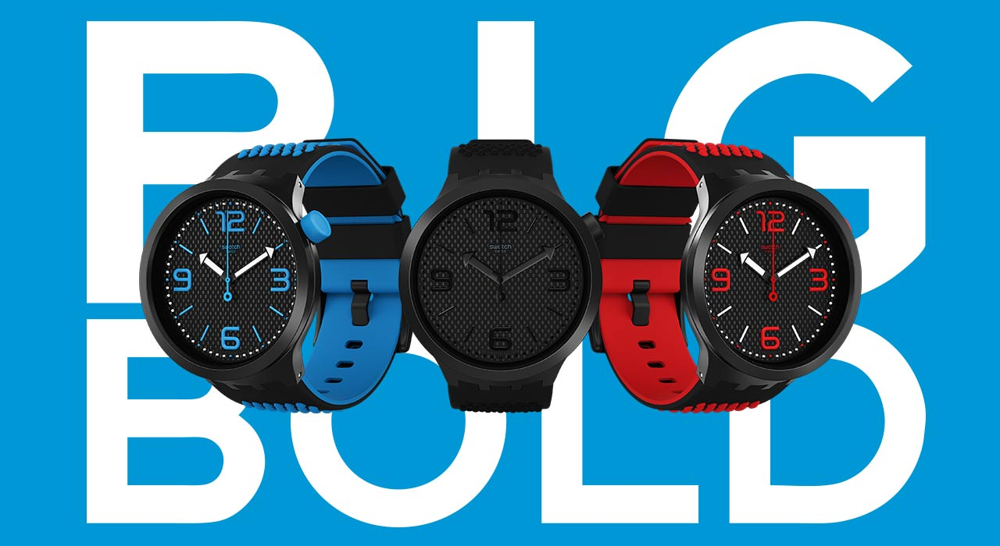

Our time-pieces are a work of art!
All Swatch watches come with the label Swiss Made. Swiss Made embodies a concept of quality that has been forged over the years. It includes the technical quality of watches (accuracy, reliability, water-resistance and shock-resistance), as well as their aesthetic quality (elegance and originality of design). It covers both traditional manufacturing and new technologies (micro-electronics).
Since 2014, Nu Metro has enhanced cinema-going around the country through the introduction of cutting-edge cinema experiences 4DX, Xtreme and VIP at select cineplexes nationwide.
Swatch: Swiss Made since 1983.
Find us at shop F6a on the first floor.
Trading hours-Weekdays: 8h00am-17h00pm Weekends: 9h00am-14h00pm.
Contact telephone:031 904 0240.